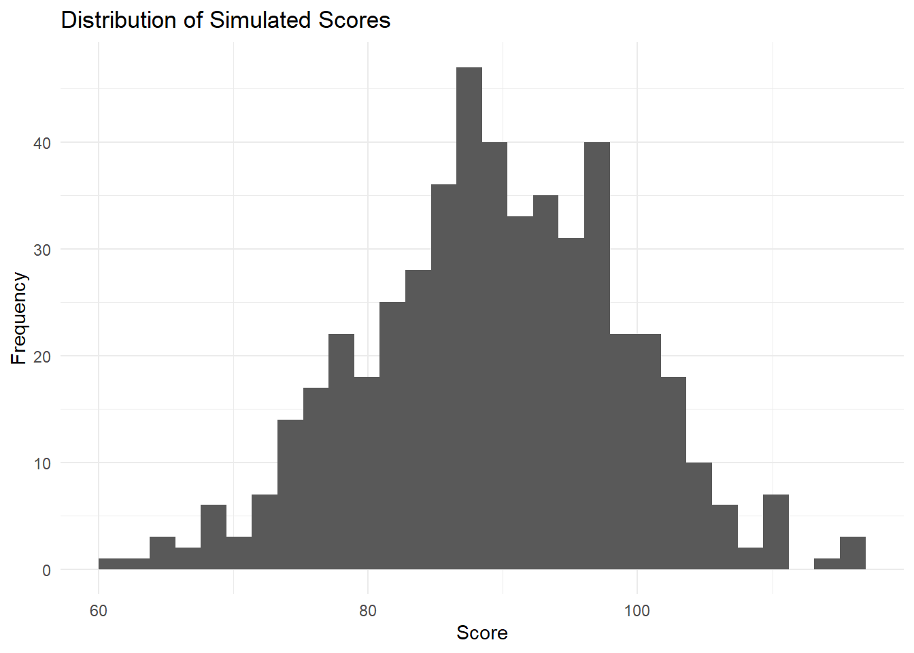
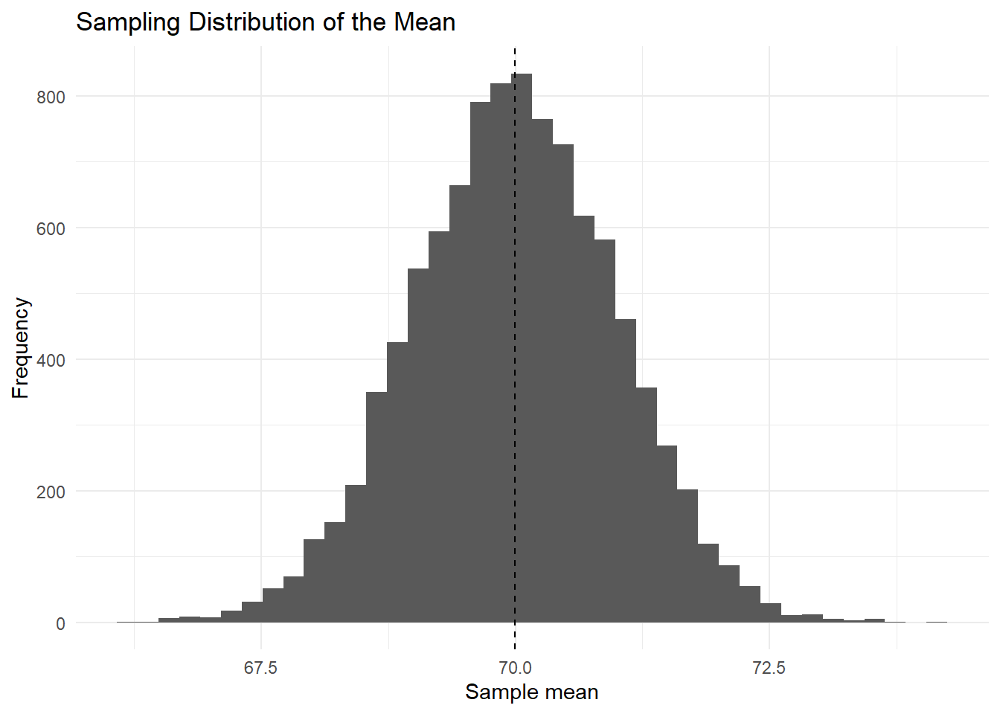
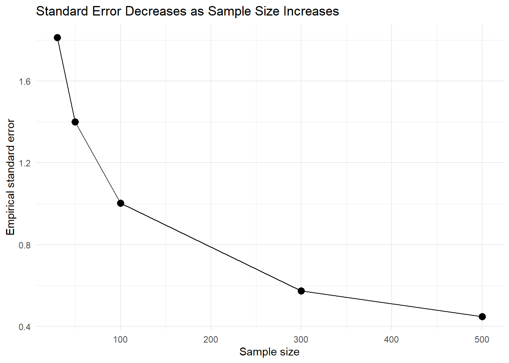
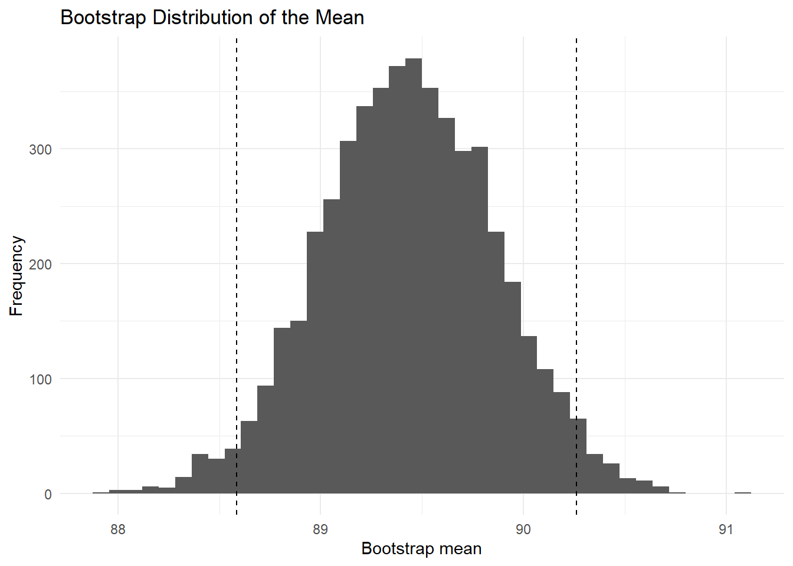
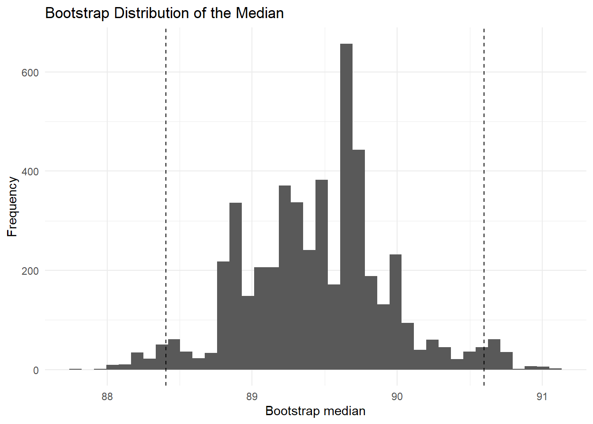
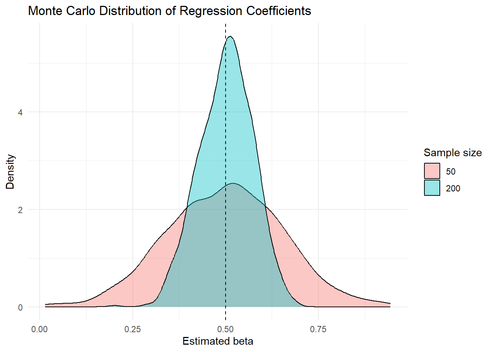
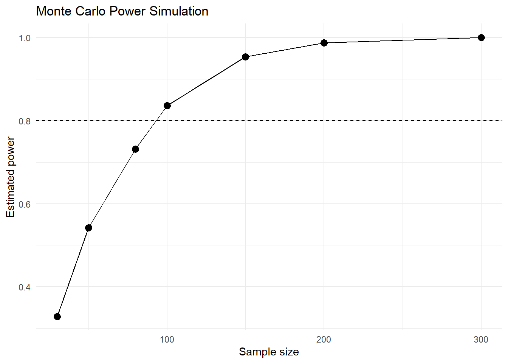
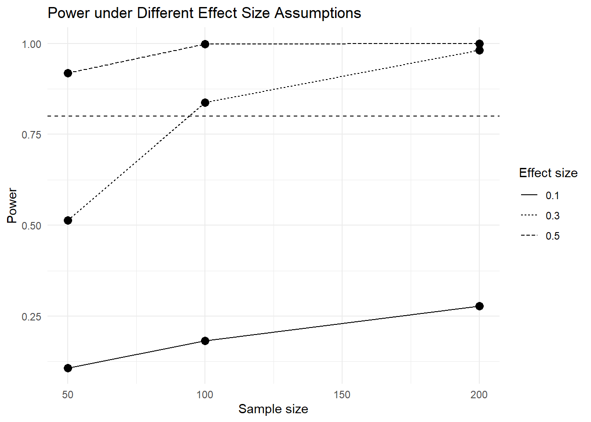

flowchart TD A[Research Question] --> B[Assumptions] B --> C[Random Data Generation] C --> D[Repeat Simulation] D --> E[Sampling Distribution] E --> F[Uncertainty Estimate] F --> G[Research Interpretation]
Advanced 06. Mô phỏng Monte Carlo
Monte Carlo Simulation and Bootstrap
Tổng quan bài học
TipKết quả học tập (Learning Outcomes)
Sau khi hoàn thành bài học này, học viên có thể:
- Hiểu mô phỏng Monte Carlo (Monte Carlo Simulation)
- Biết khi nào dùng mô phỏng thay vì chỉ dùng công thức thống kê
- Hiểu bất định (Uncertainty) trong ước lượng
- Mô phỏng phân phối mẫu (Sampling Distribution)
- Thực hiện bootstrap cơ bản
- Tính khoảng tin cậy bootstrap (Bootstrap Confidence Interval)
- Mô phỏng sai số chuẩn (Standard Error)
- Mô phỏng power analysis ở mức nhập môn
- Trực quan hóa kết quả mô phỏng bằng
ggplot2 - Viết kết quả mô phỏng theo chuẩn báo cáo học thuật
NoteLogic bài học (Module Logic)
Bài học này trả lời câu hỏi:
Nếu một vấn đề thống kê khó giải bằng công thức, ta có thể dùng mô phỏng để hiểu kết quả không?
Quy trình:
Define Question
↓
Set Assumptions
↓
Generate Random Data
↓
Repeat Many Times
↓
Summarize Results
↓
Visualize Uncertainty
↓
Interpret and ReportMinh họa quy trình Monte Carlo
1. Mô phỏng Monte Carlo là gì?
NoteKiến thức nền tảng (Knowledge Notes)
Là gì? (What?)
Mô phỏng Monte Carlo (Monte Carlo Simulation) là phương pháp dùng lấy mẫu ngẫu nhiên lặp đi lặp lại để hiểu hành vi của một thống kê, một mô hình hoặc một quyết định trong điều kiện bất định.
Tại sao cần? (Why?)
Monte Carlo hữu ích khi:
- Công thức thống kê quá phức tạp
- Muốn hiểu uncertainty
- Muốn kiểm tra độ ổn định của kết quả
- Muốn đánh giá power
- Muốn mô phỏng rủi ro hoặc kịch bản
- Muốn hiểu phân phối của một estimator
Khi nào dùng? (When?)
Dùng khi cần trả lời các câu hỏi như:
Nếu lặp lại nghiên cứu 10,000 lần thì kết quả sẽ thay đổi như thế nào?hoặc:
Với sample size hiện tại, xác suất phát hiện hiệu ứng là bao nhiêu?Thực hiện thế nào? (How?)
Trong R, thường dùng:
replicate()
for loop
map()
sample()
rnorm()
runif()
rbinom()
ImportantỨng dụng trong nghiên cứu (Research Application)
Monte Carlo có thể dùng trong:
- Mô phỏng power analysis
- Mô phỏng survey sampling
- Mô phỏng uncertainty trong regression
- Mô phỏng rủi ro
- Mô phỏng phân phối hiệu ứng
- Bootstrap confidence interval
- Kiểm tra độ ổn định của estimator
WarningSai lầm thường gặp (Common Mistakes)
Người học thường mắc lỗi:
- Chạy quá ít lần mô phỏng
- Không đặt seed
- Không lưu kết quả mô phỏng thành data frame
- Diễn giải mô phỏng như dữ liệu thật
- Quên nêu giả định mô phỏng
- Không kiểm tra sensitivity với giả định khác
2. Chuẩn bị môi trường
NoteKiến thức nền tảng (Knowledge Notes)
Module này chủ yếu dùng dữ liệu mô phỏng nội bộ để đảm bảo render ổn định.
Ta vẫn thiết lập đường dẫn workbook để đồng bộ với các module khác, nhưng không phụ thuộc vào tên biến cụ thể trong Excel.
Cài đặt package
install.packages("tidyverse")
install.packages("readxl")
install.packages("janitor")
install.packages("gt")
install.packages("patchwork")Nạp package
library(tidyverse)
library(readxl)
library(janitor)
library(gt)
library(patchwork)Thiết lập đường dẫn dữ liệu
advanced_file <- if (file.exists("../data/advance/module7_advanced_data.xlsx")) {
"../data/advance/module7_advanced_data.xlsx"
} else if (file.exists("../data/advanced/module7_advanced_data.xlsx")) {
"../data/advanced/module7_advanced_data.xlsx"
} else if (file.exists("data/advance/module7_advanced_data.xlsx")) {
"data/advance/module7_advanced_data.xlsx"
} else {
"data/advanced/module7_advanced_data.xlsx"
}Đọc sheet nếu có
if (file.exists(advanced_file)) {
mc_excel_data <- read_excel(
advanced_file,
sheet = "05_Bayesian_MonteCarlo"
) |>
clean_names()
glimpse(mc_excel_data)
}Rows: 1,000
Columns: 12
$ draw_id <dbl> 1, 2, 3, 4, 5, 6, 7, 8, 9, 10, 11, 12, 13, 14, 15, 1…
$ scenario <chr> "weak_prior", "skeptical_prior", "strong_prior", "op…
$ group <chr> "treatment", "treatment", "control", "control", "tre…
$ n <dbl> 200, 200, 200, 200, 50, 50, 30, 200, 50, 100, 50, 20…
$ true_effect <dbl> 0.35, 0.35, 0.00, 0.00, 0.35, 0.00, 0.35, 0.35, 0.00…
$ prior_mean <dbl> 0.0, 0.0, 0.3, 0.5, 0.5, 0.0, 0.0, 0.0, 0.5, 0.0, 0.…
$ prior_sd <dbl> 1.00, 0.25, 0.20, 0.30, 0.30, 0.25, 0.25, 1.00, 0.30…
$ observed_mean <dbl> 0.385, 0.457, -0.100, 0.000, 0.271, -0.193, 0.536, 0…
$ observed_sd <dbl> 0.826, 0.997, 0.994, 1.287, 0.902, 1.037, 0.991, 1.2…
$ successes <dbl> 108, 113, 96, 88, 21, 25, 17, 96, 22, 42, 20, 123, 8…
$ trials <dbl> 200, 200, 200, 200, 50, 50, 30, 200, 50, 100, 50, 20…
$ simulated_outcome <dbl> -0.355, 0.728, -1.304, -0.033, -0.557, 0.514, 0.877,…3. Random sampling trong R
TipKết quả học tập (Learning Outcomes)
Sau phần này, học viên có thể:
- Tạo số ngẫu nhiên
- Hiểu vai trò của
set.seed() - Mô phỏng biến liên tục và biến nhị phân
- Tạo dataset giả lập đơn giản
NoteKiến thức nền tảng (Knowledge Notes)
Random sampling là gì?
Random sampling là quá trình tạo dữ liệu hoặc lấy mẫu ngẫu nhiên từ một phân phối.
Vì sao cần set.seed()?
set.seed() giúp kết quả mô phỏng có thể tái lập (reproducible).
Nếu không đặt seed, mỗi lần chạy có thể cho kết quả khác nhau.
Tạo dữ liệu ngẫu nhiên
set.seed(123)
demo_data <- tibble(
id = 1:500,
study_hours = rnorm(500, mean = 4, sd = 1.2),
motivation = rnorm(500, mean = 3.5, sd = 0.8),
treatment = rbinom(500, size = 1, prob = 0.5),
score = 60 +
4 * study_hours +
3 * motivation +
5 * treatment +
rnorm(500, mean = 0, sd = 8)
)
glimpse(demo_data)Rows: 500
Columns: 5
$ id <int> 1, 2, 3, 4, 5, 6, 7, 8, 9, 10, 11, 12, 13, 14, 15, 16, 17,…
$ study_hours <dbl> 3.327429, 3.723787, 5.870450, 4.084610, 4.155145, 6.058078…
$ motivation <dbl> 3.018486, 2.705041, 4.321428, 4.100849, 2.292667, 3.423882…
$ treatment <int> 0, 0, 0, 1, 0, 1, 0, 0, 0, 0, 1, 0, 1, 1, 1, 0, 1, 0, 0, 0…
$ score <dbl> 90.77878, 87.99352, 99.91505, 96.72966, 93.82917, 91.48588…Trực quan hóa dữ liệu mô phỏng
ggplot(demo_data, aes(x = score)) +
geom_histogram(bins = 30) +
labs(
title = "Distribution of Simulated Scores",
x = "Score",
y = "Frequency"
) +
theme_minimal()
rnorm()tạo biến liên tục từ phân phối chuẩn.rbinom()tạo biến nhị phân hoặc count từ phân phối binomial.set.seed()giúp kết quả có thể tái lập.- Dữ liệu mô phỏng phải dựa trên giả định rõ ràng.
4. Sampling distribution của mean
TipKết quả học tập (Learning Outcomes)
Sau phần này, học viên có thể:
- Hiểu phân phối mẫu (Sampling Distribution)
- Mô phỏng nhiều sample means
- Hiểu vì sao sample mean thay đổi giữa các mẫu
- Trực quan hóa uncertainty của mean
NoteKiến thức nền tảng (Knowledge Notes)
Sampling Distribution là gì?
Sampling distribution là phân phối của một thống kê nếu ta lặp lại việc lấy mẫu nhiều lần.
Ví dụ:
Lấy 1,000 mẫu
↓
Tính mean mỗi mẫu
↓
Tạo phân phối của 1,000 meanTại sao cần?
Nó giúp hiểu tại sao cùng một nghiên cứu nhưng sample khác nhau có thể cho kết quả khác nhau.
Mô phỏng 10,000 sample means
set.seed(123)
sample_means <- replicate(
10000,
mean(rnorm(100, mean = 70, sd = 10))
)
sample_mean_df <- tibble(sample_mean = sample_means)
sample_mean_df |>
summarise(
mean_of_means = mean(sample_mean),
sd_of_means = sd(sample_mean),
lower_95 = quantile(sample_mean, 0.025),
upper_95 = quantile(sample_mean, 0.975)
)Vẽ sampling distribution
ggplot(sample_mean_df, aes(x = sample_mean)) +
geom_histogram(bins = 40) +
geom_vline(xintercept = mean(sample_means), linetype = "dashed") +
labs(
title = "Sampling Distribution of the Mean",
x = "Sample mean",
y = "Frequency"
) +
theme_minimal()
ImportantDiễn giải kết quả (Interpretation)
Nếu lấy nhiều mẫu khác nhau từ cùng một quần thể, sample mean sẽ dao động quanh population mean.
Độ dao động này chính là nền tảng của standard error và confidence interval.
5. Monte Carlo để ước lượng sai số chuẩn
TipKết quả học tập (Learning Outcomes)
Sau phần này, học viên có thể:
- Mô phỏng standard error
- So sánh empirical standard error và theoretical standard error
- Hiểu tác động của sample size
NoteKiến thức nền tảng (Knowledge Notes)
Standard Error là gì?
Sai số chuẩn (Standard Error) đo mức độ biến động của một estimator giữa các mẫu lặp lại.
Với mean:
SE = SD / sqrt(n)Monte Carlo làm gì?
Monte Carlo ước lượng SE bằng cách mô phỏng nhiều mẫu và tính độ lệch chuẩn của các sample means.
Hàm mô phỏng SE
simulate_se <- function(n, mu = 70, sigma = 10, reps = 5000) {
means <- replicate(
reps,
mean(rnorm(n, mean = mu, sd = sigma))
)
tibble(
n = n,
empirical_se = sd(means),
theoretical_se = sigma / sqrt(n)
)
}So sánh nhiều sample sizes
se_results <- bind_rows(
simulate_se(30),
simulate_se(50),
simulate_se(100),
simulate_se(300),
simulate_se(500)
)
se_resultsVẽ SE theo sample size
ggplot(se_results, aes(x = n, y = empirical_se)) +
geom_line() +
geom_point(size = 3) +
labs(
title = "Standard Error Decreases as Sample Size Increases",
x = "Sample size",
y = "Empirical standard error"
) +
theme_minimal()
Sample size càng lớn thì standard error càng nhỏ.
Điều này giúp giải thích tại sao nghiên cứu có mẫu lớn thường cho ước lượng chính xác hơn.
6. Bootstrap là gì?
TipKết quả học tập (Learning Outcomes)
Sau phần này, học viên có thể:
- Hiểu bootstrap
- Lấy mẫu lại có hoàn lại (resampling with replacement)
- Tính bootstrap mean
- Tính bootstrap confidence interval
- Trực quan hóa bootstrap distribution
NoteKiến thức nền tảng (Knowledge Notes)
Bootstrap là gì?
Bootstrap là kỹ thuật lấy mẫu lại từ dữ liệu hiện có, có hoàn lại, để ước lượng uncertainty.
Tại sao cần?
Bootstrap hữu ích khi:
- Không chắc phân phối lý thuyết
- Muốn ước lượng confidence interval
- Dữ liệu lệch
- Estimator phức tạp
Khi nào dùng?
Dùng cho:
- Mean
- Median
- Correlation
- Regression coefficients
- Indirect effects trong mediation
- Effect sizes
Bootstrap mean
set.seed(123)
bootstrap_means <- replicate(
5000,
{
boot_sample <- sample(
demo_data$score,
size = nrow(demo_data),
replace = TRUE
)
mean(boot_sample)
}
)
bootstrap_df <- tibble(bootstrap_mean = bootstrap_means)Bootstrap confidence interval
bootstrap_ci <- quantile(
bootstrap_means,
probs = c(0.025, 0.975)
)
bootstrap_ci 2.5% 97.5%
88.58629 90.26289 Vẽ bootstrap distribution
ggplot(bootstrap_df, aes(x = bootstrap_mean)) +
geom_histogram(bins = 40) +
geom_vline(xintercept = bootstrap_ci, linetype = "dashed") +
labs(
title = "Bootstrap Distribution of the Mean",
x = "Bootstrap mean",
y = "Frequency"
) +
theme_minimal()
ImportantDiễn giải kết quả (Interpretation)
Bootstrap CI cho biết khoảng ước lượng uncertainty dựa trên lấy mẫu lại từ dữ liệu hiện có.
Nó không tạo thêm dữ liệu thật, mà chỉ mô phỏng sự biến động của estimator từ sample quan sát.
7. Bootstrap cho median
TipKết quả học tập (Learning Outcomes)
Sau phần này, học viên có thể:
- Dùng bootstrap cho median
- Hiểu vì sao bootstrap hữu ích với statistic không đơn giản
- So sánh mean và median uncertainty
NoteKiến thức nền tảng (Knowledge Notes)
Median thường khó có công thức standard error đơn giản hơn mean.
Bootstrap giúp ước lượng uncertainty của median một cách linh hoạt.
Bootstrap median
set.seed(123)
bootstrap_medians <- replicate(
5000,
{
boot_sample <- sample(
demo_data$score,
size = nrow(demo_data),
replace = TRUE
)
median(boot_sample)
}
)
median_ci <- quantile(
bootstrap_medians,
probs = c(0.025, 0.975)
)
median_ci 2.5% 97.5%
88.40623 90.59896 Vẽ bootstrap median
tibble(bootstrap_median = bootstrap_medians) |>
ggplot(aes(x = bootstrap_median)) +
geom_histogram(bins = 40) +
geom_vline(xintercept = median_ci, linetype = "dashed") +
labs(
title = "Bootstrap Distribution of the Median",
x = "Bootstrap median",
y = "Frequency"
) +
theme_minimal()
8. Monte Carlo cho hồi quy
TipKết quả học tập (Learning Outcomes)
Sau phần này, học viên có thể:
- Mô phỏng dữ liệu hồi quy
- Lặp lại hồi quy nhiều lần
- Xem phân phối của hệ số hồi quy
- Đánh giá bias và uncertainty
NoteKiến thức nền tảng (Knowledge Notes)
Monte Carlo trong hồi quy giúp trả lời:
Nếu nghiên cứu được lặp lại nhiều lần, hệ số hồi quy sẽ dao động như thế nào?Điều này đặc biệt hữu ích khi thiết kế nghiên cứu hoặc đánh giá độ ổn định của mô hình.
Hàm mô phỏng hồi quy
simulate_regression <- function(n = 100, beta = 0.5, reps = 1000) {
estimates <- replicate(
reps,
{
x <- rnorm(n)
y <- 1 + beta * x + rnorm(n)
model <- lm(y ~ x)
coef(model)["x"]
}
)
tibble(
n = n,
beta_true = beta,
beta_estimate = estimates
)
}Chạy mô phỏng
reg_sim_50 <- simulate_regression(n = 50, beta = 0.5)
reg_sim_200 <- simulate_regression(n = 200, beta = 0.5)
reg_sim <- bind_rows(
reg_sim_50,
reg_sim_200
)Vẽ phân phối hệ số
ggplot(reg_sim, aes(x = beta_estimate, fill = factor(n))) +
geom_density(alpha = 0.4) +
geom_vline(xintercept = 0.5, linetype = "dashed") +
labs(
title = "Monte Carlo Distribution of Regression Coefficients",
x = "Estimated beta",
y = "Density",
fill = "Sample size"
) +
theme_minimal()
ImportantDiễn giải kết quả (Interpretation)
Khi sample size tăng, phân phối của hệ số hồi quy thường hẹp hơn.
Điều này cho thấy ước lượng ổn định hơn khi số quan sát lớn hơn.
9. Power simulation
TipKết quả học tập (Learning Outcomes)
Sau phần này, học viên có thể:
- Hiểu power ở mức cơ bản
- Mô phỏng xác suất phát hiện hiệu ứng
- Hiểu tác động của sample size và effect size
- Trực quan hóa power curve
NoteKiến thức nền tảng (Knowledge Notes)
Power là gì?
Power là xác suất phát hiện được hiệu ứng nếu hiệu ứng thật sự tồn tại.
Power = P(reject H0 | H1 is true)Tại sao cần?
Power giúp thiết kế nghiên cứu có sample size phù hợp.
Monte Carlo power simulation
Ta mô phỏng nhiều nghiên cứu giả định và tính tỷ lệ mô hình phát hiện p-value nhỏ hơn .05.
Hàm mô phỏng power
simulate_power <- function(n = 100, beta = 0.3, reps = 1000, alpha = 0.05) {
p_values <- replicate(
reps,
{
x <- rnorm(n)
y <- 1 + beta * x + rnorm(n)
model <- lm(y ~ x)
summary(model)$coefficients["x", "Pr(>|t|)"]
}
)
mean(p_values < alpha)
}Power theo sample size
power_results <- tibble(
n = c(30, 50, 80, 100, 150, 200, 300),
power = map_dbl(
n,
~ simulate_power(n = .x, beta = 0.3, reps = 1000)
)
)
power_resultsVẽ power curve
ggplot(power_results, aes(x = n, y = power)) +
geom_line() +
geom_point(size = 3) +
geom_hline(yintercept = 0.8, linetype = "dashed") +
labs(
title = "Monte Carlo Power Simulation",
x = "Sample size",
y = "Estimated power"
) +
theme_minimal()
WarningSai lầm thường gặp (Common Mistakes)
Power simulation phụ thuộc vào giả định.
Nếu giả định về effect size hoặc error variance sai, power estimate cũng sẽ thay đổi.
10. Simulation scenario analysis
TipKết quả học tập (Learning Outcomes)
Sau phần này, học viên có thể:
- Mô phỏng nhiều kịch bản
- So sánh kết quả theo giả định khác nhau
- Hiểu sensitivity analysis
- Trình bày kết quả bằng bảng và biểu đồ
NoteKiến thức nền tảng (Knowledge Notes)
Scenario analysis dùng để trả lời:
Nếu giả định thay đổi thì kết quả có thay đổi nhiều không?Trong nghiên cứu, đây là cách tốt để đánh giá độ nhạy của kết luận.
So sánh nhiều effect sizes
scenario_grid <- expand_grid(
n = c(50, 100, 200),
beta = c(0.1, 0.3, 0.5)
)
scenario_results <- scenario_grid |>
mutate(
power = map2_dbl(
n,
beta,
~ simulate_power(n = .x, beta = .y, reps = 500)
)
)
scenario_resultsVẽ scenario analysis
ggplot(scenario_results, aes(x = n, y = power, linetype = factor(beta))) +
geom_line() +
geom_point(size = 3) +
geom_hline(yintercept = 0.8, linetype = "dashed") +
labs(
title = "Power under Different Effect Size Assumptions",
x = "Sample size",
y = "Power",
linetype = "Effect size"
) +
theme_minimal()
Scenario analysis giúp nhà nghiên cứu không phụ thuộc vào một giả định duy nhất.
Nên kiểm tra nhiều kịch bản để kết luận thận trọng hơn.
11. Viết kết quả học thuật
NoteKiến thức nền tảng (Knowledge Notes)
Là gì? (What?)
Viết kết quả mô phỏng cần trình bày rõ:
- Mục tiêu mô phỏng
- Giả định mô phỏng
- Số lần lặp
- Kết quả chính
- Độ bất định
- Ý nghĩa thực tế
Template Monte Carlo
A Monte Carlo simulation was conducted to evaluate the sampling variability of the estimator. Across 10,000 replications, the estimated mean was centered around the true population value, with a 95% simulation interval of [lower, upper].Template Bootstrap
A bootstrap procedure with 5,000 resamples was used to estimate the uncertainty of the sample mean. The bootstrap 95% confidence interval ranged from [lower] to [upper].Template Power Simulation
A Monte Carlo power simulation was conducted across different sample sizes. The results indicated that statistical power increased with sample size and reached approximately 0.80 when the sample size was around [n].
WarningSai lầm thường gặp (Common Mistakes)
Không nên báo cáo mô phỏng mà không nêu giả định.
Một câu tốt cần có:
under the assumed effect size and error variancehoặc:
given the simulation assumptions12. Bài tập thực hành
ImportantBài tập thực hành (Practice Exercise)
Hãy thực hiện:
- Tạo một dataset mô phỏng với 300 quan sát.
- Mô phỏng 10,000 sample means.
- Vẽ sampling distribution.
- Tính empirical standard error.
- Thực hiện bootstrap mean với 5,000 resamples.
- Tính bootstrap confidence interval.
- Bootstrap median.
- Mô phỏng hệ số hồi quy.
- Mô phỏng power theo sample size.
- Vẽ power curve.
- Viết một đoạn báo cáo kết quả mô phỏng.
13. Thử thách
WarningThử thách (Challenge)
Tình huống
Bạn chuẩn bị một nghiên cứu với outcome liên tục và dự đoán effect size khoảng 0.30.
Bạn chưa biết sample size nào đủ tốt.
Câu hỏi
- Bạn sẽ dùng Monte Carlo như thế nào?
- Cần giả định những thông tin nào?
- Số lần mô phỏng nên là bao nhiêu?
- Bạn sẽ đánh giá power như thế nào?
- Kết quả mô phỏng nên được trình bày ra sao?
TipGợi ý trả lời (Suggested Solution)
Một câu trả lời tốt nên nêu:
- Xác định effect size giả định.
- Mô phỏng nhiều sample sizes.
- Chạy nhiều lần lặp cho mỗi sample size.
- Tính tỷ lệ p-value < .05.
- Vẽ power curve.
- Báo cáo giả định và giới hạn của mô phỏng.
14. Dự án nhỏ
ImportantDự án nhỏ (Mini Project)
Chủ đề
Monte Carlo Simulation Report
Sản phẩm đầu ra
Học viên cần tạo:
Monte_Carlo_Simulation_Report.htmlNội dung báo cáo
- Research question
- Simulation assumptions
- Random data generation
- Sampling distribution
- Bootstrap confidence interval
- Regression simulation
- Power simulation
- Scenario analysis
- Visualization
- Academic interpretation
- Limitations and next steps
15. Điểm cần ghi nhớ
- Monte Carlo dùng lặp lại ngẫu nhiên để hiểu uncertainty.
set.seed()giúp kết quả có thể tái lập.- Sampling distribution giải thích vì sao ước lượng thay đổi giữa các mẫu.
- Bootstrap lấy mẫu lại từ dữ liệu hiện có.
- Bootstrap hữu ích khi công thức lý thuyết phức tạp.
- Power simulation giúp thiết kế sample size.
- Kết quả mô phỏng phụ thuộc vào giả định.
- Nên báo cáo rõ số lần lặp, giả định và kết quả chính.
16. Bước tiếp theo
NoteBước tiếp theo (What Next?)
Sau khi hoàn thành phần này, học viên nên:
- Biết cách mô phỏng sampling distribution.
- Biết cách bootstrap mean và median.
- Biết cách mô phỏng regression coefficients.
- Biết cách chạy power simulation.
- Chuyển sang:
Trong phần tiếp theo, chúng ta sẽ học vì sao phân tích dữ liệu gộp có thể dẫn đến kết luận ngược với phân tích theo nhóm.